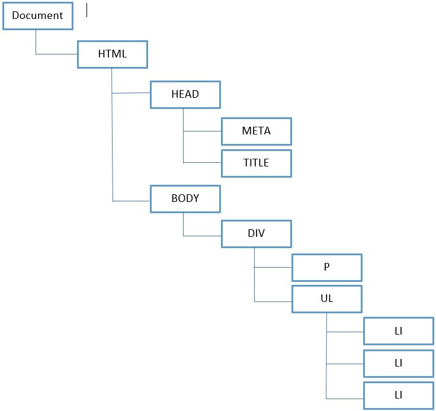
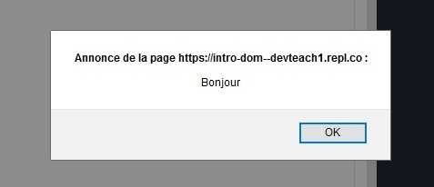
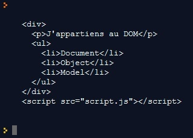
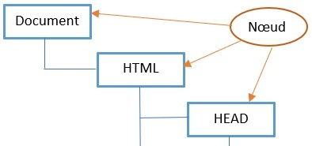
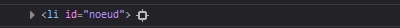

Une page web est un document HTML pouvant être affiché dans un navigateur. Le DOM permet de représenter cette page sous la forme d'un ensemble d'objets. On le représente généralement sous la forme d'un arbre dans lequel les ramifications sont les éléments HTML et CSS. Nous allons voir ici les éléments qui le composent.
Le DOM (pour Document Object Model) est une interface de programmation pour les documents HTML et XML. Il fournit une page dont les programmes peuvent modifier la structure, son style et son contenu. Cette représentation du document permet de le voir comme un groupe structuré (un arbre) de nœuds et d'objets possédant différentes propriétés et méthodes. Fondamentalement, il relie les pages web aux scripts ou langages de programmation. Il est régi par les normes de la W3C.
Tous les éléments d'un document, c'est-à-dire le document lui-même, les en-têtes, les blocs de contenu <div><</div>, les paragraphes <p></p>, le style color : #FFFFFF, le texte et bien d'autres font partie du DOM.
See the Pen Untitled by OpenSpirit (@OpenSpirit) on CodePen.
La page web représentée par le code HTML ci-dessus peut être modélisée par le schéma ci-dessous.
Il n'y a rien à installer ou à télécharger pour manipuler le DOM. C'est notre navigateur qui implémente un DOM pour rendre accessibles nos pages web à JavaScript. Nous pouvons donc commencer à utiliser l'API.
Les points d'entrée principaux sont les éléments document et window :
See the Pen Untitled by OpenSpirit (@OpenSpirit) on CodePen.
Dans cet exemple, la popup avec le message "Bonjour" sera affichée quand la page web sera entièrement chargée.
See the Pen Untitled by OpenSpirit (@OpenSpirit) on CodePen.
Dans cet exemple, nous accédons à notre <body></body> grâce à l'élément document, puis body, puis la propriété innerHTML qui permet d'afficher l'arborescence du DOM à partir de l'élément souhaité (ici, body).
Un nœud (ou node) est tout simplement un élément du DOM : un texte, une balise HTML, ou un attribut par exemple. Nous pourrons grâce à des méthodes de l'API accéder aux nœuds, les modifier, créer des nœuds frères, parents, enfants...
See the Pen Untitled by OpenSpirit (@OpenSpirit) on CodePen.
Pour sélectionner le nœud portant l'attribut id="nœud", nous utilisons le sélecteur getElementById(), que nous verrons en détails dans le prochain chapitre.
See the Pen Untitled by OpenSpirit (@OpenSpirit) on CodePen.
Affichons dans la console notre nœud et son nœud parent.
" />La propriété innerHTML vous permet d'obtenir ou de définir le balisage HTML contenu dans une balise HTML.
Exemple :
See the Pen Untitled by OpenSpirit (@OpenSpirit) on CodePen.
innerText définit ou renvoie le contenu textuel du nœud spécifié et de tous les nœuds enfants.
Exemple :
See the Pen Untitled by OpenSpirit (@OpenSpirit) on CodePen.
La propriété textContent définit ou renvoie le contenu textuel du nœud spécifié, et de tous ses enfants. Si vous définissez la propriété textContent, tous les nœuds enfants seront supprimés et remplacés par un seul nœud Text contenant la chaîne spécifiée.
Exemple :
See the Pen Untitled by OpenSpirit (@OpenSpirit) on CodePen.